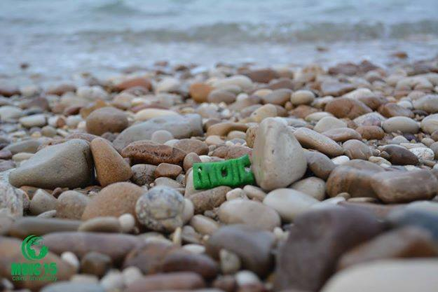
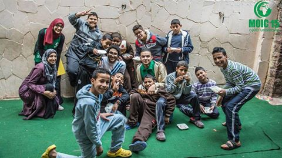
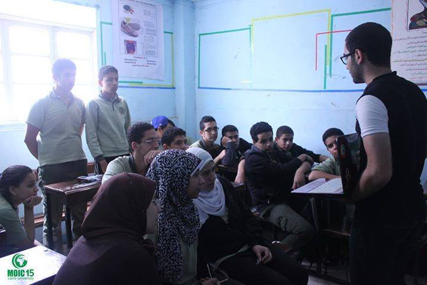
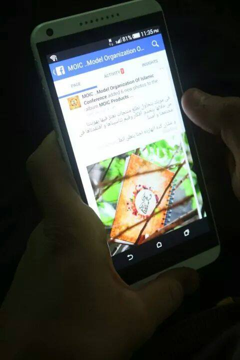
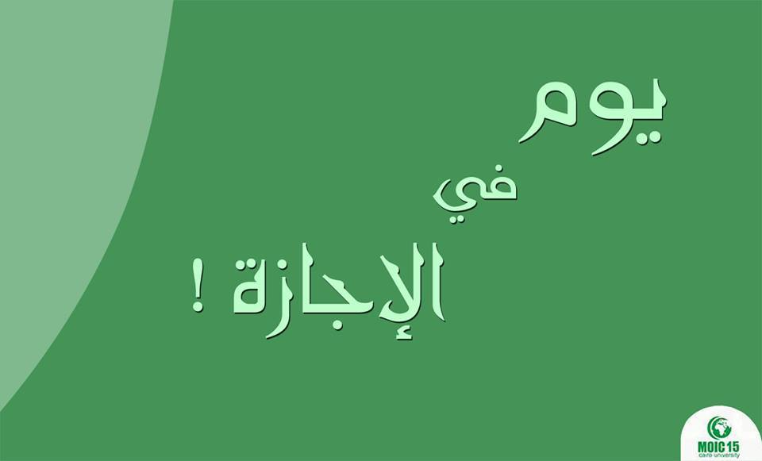

النهاردة هنتكلم مشروع من مشروعات مويك ألا وهو مشروع المجالس الأكاديمية
وبتفتح مويك باب التقديم للمجالس فى بداية كل عام دراسى جديد وهم عبارة عن 5 مجالس ودى نبذة مختصرة عنهم :-
1-مجلس مؤتمر القمة : وده هدفه انه يشرح للطلبة مفهوم علم السياسة ومعانى المفاهيم السياسية وتصحيح المعانى الخاطئة عنها .
2- مجلس صناع الحضارة : وده بيهتم بمناقشة اسباب انحدار الهوية وازاى نتصدى لهجمات التغريب وازى نقدر نعيد مجد الامة السابق .
3- Economic Council " المجلس الاقتصادى " : والهدف من المجلس ده شرح المفاهيم الاقتصادية وكيف يدار اقتصاد الدول وكيفية ادارة المشاكل الاقتصادية وايه هو مفهوم الاقتصاد الاسلامى وازاى فيه بعض الدول الغربية بطبقه .
4-Social Council " المجلس الاجتماعى " : يهتم هذا المجلس بمفهوم ريادة الاعمال "Entrepreneurship" و ازاى يكون الفرد رائد للاعمال ويقدر يبحث فى مشاكل المجتمع ويفكر فى حلول ابداعية ليها ويأسس بيزنس خاص بيه من خلاله يقدر يحل جزء من هذه المشاكل .
5- Media Council "المجلس الاعلامى " : والمجلس ده بيهتم بجانب الاعلام الاكاديمى اللى هو هتدرس ايه هى انواع الاعلام المختلفة وكيفية اعداد محتوى مناسب ليه والجانب الفنى اللى هتتعلم فيه التصوير وازاى تعمل مونتاج وتكتب التقارير الصحفية .
- وميزة المجالس دى انك مش بس بتتعلم فيها كلام نظرى بس لأ انت كمان بتشتغل عملى و بتطبق المعلومات اللى درستها فيها فى الشغل العملى
Good Deeds

رسولنا الكريم قال "أتحب أن يلين قلبك وتدرك حاجتك ؟
ارحم اليتيم .. وامسح رأسه .. وأطعمه من طعامك يلن قلبك وتدرك حاجتك"
مشروع النوايا الحسنة " Good deeds " فى مويك .. مش بيشوف اليتيم فى أول جمعة من أبريل وبس .. هو بيشوفه طول السنة
لإننا مؤمنين أن الاطفال الأيتام دول بذرة صغيرة بإيدينا احنا نخليهم ذُرية صالحة بتفيد غيرها والمجتمع أو تكون غير كده
احنا فى الاجازة يعنى عندنا وقت فاضي حاول تخصص يومين او يوم فى الأسبوع وتاخد اصحابك وتنزلوا دار أيتام تلعبوا مع الأطفال و تشوفوا محتاجين ايه
Juniors

معظمنا لما كان في المدرسة - بالذات في ثانوي -
كنا بنبقى عايزين نسمع صوت تاني غير دماغنا
لو كنا عرفنا ليه ادخل علمي ولا أدبي ولا اختار كليتي على أساس ايه - غير التنسيق طبعا اللي بيدبس - و ايه اللي يخليني أفرق عن غيري مابقاش مجرد واحد خلص ثانوية و دخل كلية و اتخرج منها و اشتغل زيه زي أي حد . كل ده كان هيفرق معانا
عشان كدة MOIC واحد من الprojects بتاعتها هو ال juniors .. بنعمل فيه ايه ؟
بننزل لطلبة ثانوي في المدارس و بنحاول نوعيهم بالحاجات دي , بنعرفهم ازاي يفهموا الناس و يفهموا نفسهم الأول و انهم مش مجرد حد كلنا بنشوفه مش واعي كفاية , و ازاي ممكن يوصلوا لحاجة عايزنها حتى لو غيرهم يبقى شايفها صغيرة.
MOIC Page

احنا في MOIC بنحاول على قد ما نقدر اننا نكون سبب ولو بسيط نقدر بيه نفيد غيرنا
ونأكد على أهمية الوعي لانه هو الطريق الوحيد لنهضة أمتنا.
وبما انكم انتم المحور الاساسي لاهتمامنا
وبما ان مفيش حد مبيغلطش وان الكمال ده لله وحدُه
فياريت لو تقولولنا
- ايه مستنينه تشوفوه على page MOIC الفترة الجايّة ؟
- ايه من اللي كنا بنقدمُه الفترة اللي فاتت مكنش عاجبكوا ؟
- آخر حاجة.. ايه قدّمناه كنتوا شايفين انه كويس ونكمل كلام عنه ؟
كل الكلام اللي هتقولوه هيفرق معانا جداً في الفترة الجايّة فياريت تقولوا كل اللي في نفسكوا
Youm fi Agaza

الإجازة الي كلنا كنا مستنينها، مفيش قلق ولا تعذيب ضمير، ولا منبهات!
بس حتى لو مفيش كل ده حاول تصحى بدري، وتذكر قول الرسول صلى الله عليه وسلم "بورك لأمتي في بكورها" ، لما بتصحى بدري بتحس أن اليوم قدامك طويل وممكن تنجز فيه حاجات كتيرة.
خطط لإجازتك واستغلها كويس، و لو كان هدفك في الإجازة هو الاستجمام فقط خُد النية أنك بترتاح عشان ترجع بعد الإجازة أقوى وتقدر تكون مفيد لنفسك والي حولك